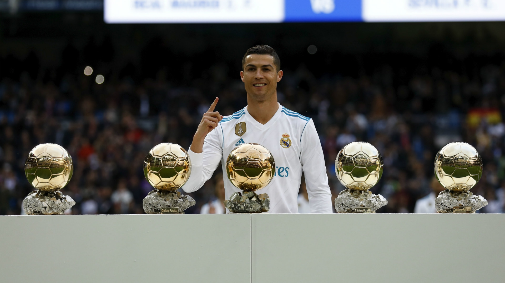
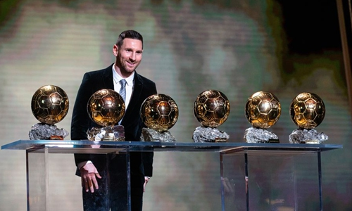
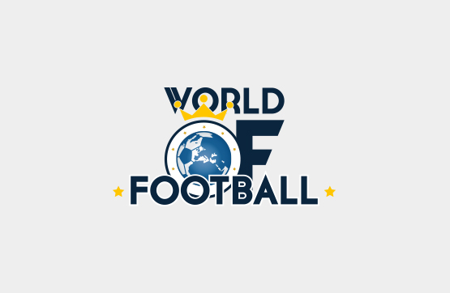
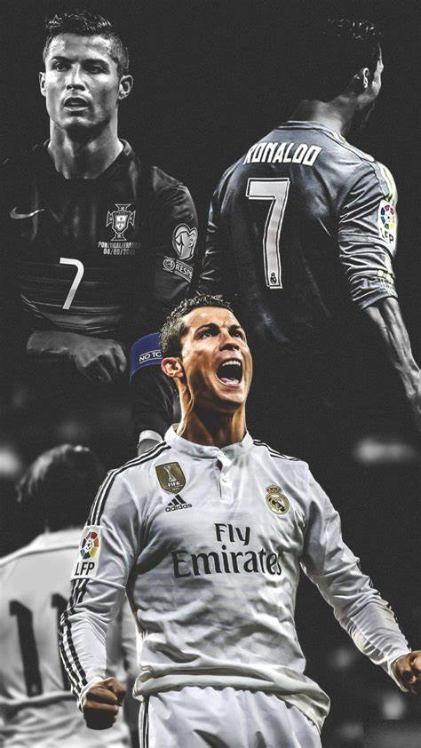
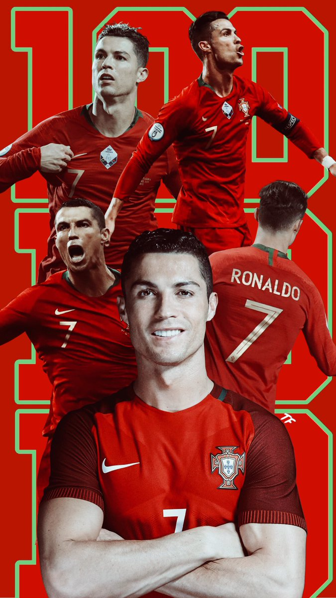
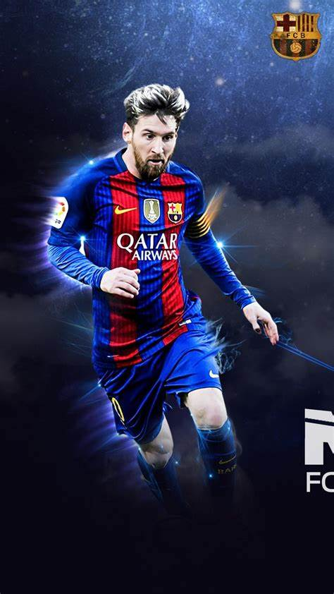
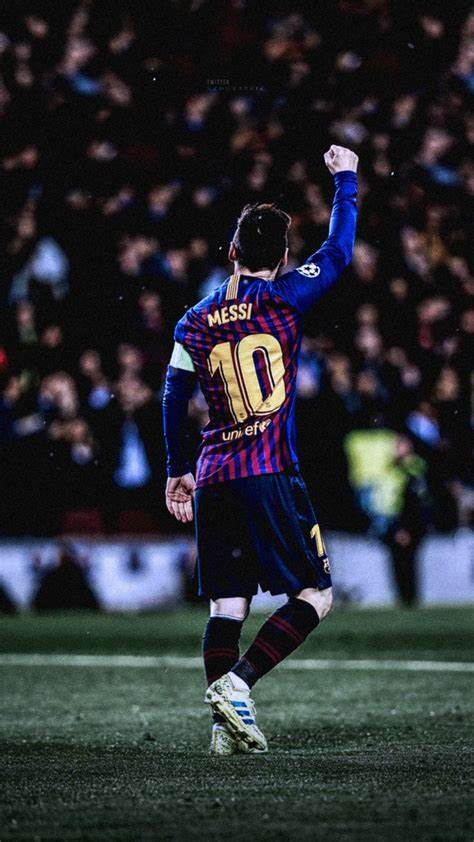
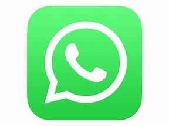

Cristiano Ronaldo dos Santos Aveiro
Tanggal lahir : 5 Februari 1985 (umur 39)
Tempat lahir : Funchal, Madeira, Portugal
Cristiano Ronaldo dos Santos Aveiro (pengucapan bahasa Portugis: [kɾiʃˈtjɐnu ʁɔˈnaɫdu]; lahir 5 Februari 1985) adalah seorang pemain sepak bola profesional asal Portugal yang bermain di klub Arab Saudi Al-Nassr FC sebagai penyerang dan juga kapten tim nasional Portugal. Sering dianggap sebagai pemain terbaik di dunia dan secara luas dianggap sebagai salah satu pemain terhebat sepanjang masa, Ronaldo memenangkan lima penghargaan Ballon d'Or[cat. 3] dan empat Sepatu Emas Eropa. Ia sejauh ini memenangkan 35 trofi sepanjang kariernya, termasuk tujuh gelar liga, lima Liga Champions UEFA, satu Kejuaraan Eropa UEFA dan satu Liga Negara UEFA. Ronaldo memegang rekor gol (140) dan umpan gol (42) terbanyak di Liga Champions, gol terbanyak di Kejuaraan Eropa UEFA (14), dan gol internasional terbanyak oleh pemain pria (123). Ia adalah salah satu dari sedikit pemain yang tercatat telah membuat lebih dari 1.100 penampilan di sepanjang karier profesionalnya, dan mencetak lebih dari 891 gol resmi baik untuk klub dan negara. Lahir dan dibesarkan di Madeira, Ronaldo memulai karier klub seniornya di Sporting CP, sebelum menandatangani kontrak dengan Manchester United pada tahun 2003 saat berusia 18 tahun, memenangkan Piala FA di musim pertamanya. Ia kemudian memenangkan tiga gelar Liga Utama Inggris secara berturut-turut, Liga Champions dan Piala Dunia Antarklub FIFA. Pada usia 23 tahun, ia memenangkan Ballon d'Or pertamanya. Ronaldo menjadi pemain sepak bola termahal saat itu ketika ia menandatangani kontrak bersama Real Madrid pada tahun 2009 dengan nilai transfer sebesar €94 juta (£80 juta), di sana ia memenangkan 16 trofi, termasuk dua gelar La Liga, dua Piala Raja Spanyol, dan empat gelar Liga Champions, serta menjadi pencetak gol terbanyak Real Madrid sepanjang masa. Ia juga menjadi runner-up untuk penghargaan Ballon d'Or sebanyak lima kali, di belakang Lionel Messi, dan memenangkan Ballon d'Or berturut-turut pada tahun 2008, 2013 dan 2014, dan sekali lagi pada tahun 2016 dan 2017. Pada tahun 2018, Ronaldo menandatangani kontrak dengan Juventus dengan nilai transfer awal €100juta (£88juta), merupakan transfer termahal yang dilakukan klub Italia dan transfer termahal untuk pemain yang berusia di atas 30 tahun. Ia memenangkan dua gelar Serie A, dua Piala Super Italia dan satu Piala Italia, sebelum kembali ke Manchester United pada tahun 2021. Ronaldo melakukan debut internasional bersama timnas senior Portugal pada tahun 2003 saat berusia 18 tahun dan sejak itu ia telah mendapatkan lebih dari 198 penampilan, menjadikannya sebagai pemain dengan penampilan terbanyak bagi timnas Portugal. Dengan lebih dari 122 gol di tingkat internasional, ia juga menjadi pencetak gol terbanyak sepanjang masa untuk timnas. Ia telah bermain dan mencetak gol di 12 turnamen besar; ia mencetak gol internasional pertamanya di ajang Kejuaraan Eropa UEFA 2004, di mana ia turut membantu Portugal mencapai final. Pada 2015, Ronaldo dinobatkan sebagai pemain Portugal terbaik sepanjang masa oleh Federasi Sepak Bola Portugal. Tahun berikutnya, ia memimpin Portugal meraih gelar turnamen besar pertama mereka yakni pada ajang Kejuaraan Eropa UEFA 2016, dan menerima Sepatu Perak sebagai pencetak gol terbanyak kedua di turnamen tersebut. Ia juga memimpin timnas meraih gelar di Liga Negara UEFA perdana pada tahun 2019, dan kemudian menerima Sepatu Emas sebagai pencetak gol terbanyak Kejuaraan Eropa UEFA 2020. Salah satu atlet paling terkenal di dunia, Ronaldo menduduki peringkat pertama atlet dengan bayaran tertinggi di dunia menurut majalah Forbes pada 2016 dan 2017 dan atlet paling terkenal di dunia menurut ESPN dari tahun 2016 hingga 2019. Majalah Time memasukkannya ke dalam daftar 100 orang paling berpengaruh di dunia pada tahun 2014. Ia adalah pemain sepak bola pertama dan olahragawan ketiga yang menghasilkan US$1 miliar dalam kariernya.
Lionel Andrés Messi
Tanggal lahir : 24 June 1987 (age 36)
Tempat lahir : Rosario, Argentina
Lionel Andrés Messi juga dikenal sebagai Leo Messi[5] (lahir 24 Juni 1987) adalah pemain sepak bola profesional asal Argentina yang bermain sebagai penyerang untuk klub Major League Soccer, Inter Miami CF dan merupakan kapten tim nasional Argentina. Sering dianggap sebagai pemain terbaik di dunia dan sering dianggap sebagai pemain terhebat sepanjang masa.[6][7][8][9] Messi telah memenangkan tujuh penghargaan Ballon d'Or, enam Sepatu Emas Eropa, dan pada tahun 2020 dinobatkan sebagai Ballon d'Or Dream Team. Ia menghabiskan seluruh karier profesionalnya bersama Barcelona, di mana ia memenangkan 34 piala, termasuk sepuluh gelar La Liga, tujuh gelar Copa del Rey dan empat Liga Champions UEFA. Seorang pencetak gol yang produktif dan playmaker kreatif, Messi memegang rekor sebagai pencetak gol terbanyak sepanjang masa di La Liga (474 gol), gol terbanyak di La Liga dan Eropa dalam satu musim (50 gol), trigol terbanyak di La Liga (36) dan Liga Champions UEFA (8), serta umpan gol terbanyak di La Liga (192), umpan gol terbanyak La Liga dan Eropa selama satu musim (21)[10] dan umpan gol terbanyak di Copa América (17). Ia telah mencetak lebih dari 750 gol selama karier seniornya untuk klub dan negara, dan gol terbanyak yang pernah dibuat oleh seorang pemain yang bermain hanya untuk satu klub. Lahir dan dibesarkan di Argentina, Messi pindah ke Spanyol untuk bergabung dengan Barcelona pada usia 13 tahun, di mana ia melakukan debut kompetitifnya pada usia 17 tahun pada Oktober 2004. Pada musim 2008–2009, ia membantu Barcelona meraih gelar treble pertama. Pada saat itu, ketika berusia 22 tahun, Messi memenangkan Ballon d'Or pertamanya. Tiga musim berikutnya ia jalani dengan kesuksesan, Messi memenangkan empat Ballon d'Or berturut-turut, membuatnya menjadi pemain pertama yang memenangkan penghargaan tersebut empat kali berturut-turut.[11] Selama musim 2011–2012, ia membuat rekor La Liga dan Eropa untuk gol terbanyak yang dicetak dalam satu musim, sekaligus menetapkan dirinya sebagai pencetak gol terbanyak sepanjang masa Barcelona. Pada musim 2014–2015, Messi menjadi pencetak gol terbanyak sepanjang masa di La Liga dan memimpin Barcelona merengkuh treble kedua, setelah itu ia dianugerahi Ballon d'Or kelima pada 2015. Messi menjadi kapten Barcelona pada 2018, dan pada 2019 ia memenangkan Ballon d'Or keenam. Sebagai pemain tim nasional Argentina, Messi menjadi pemain dengan penampilan dan gol terbanyak sepanjang masa bagi timnas Argentina. Di tingkat remaja, ia memenangkan Kejuaraan Dunia Remaja FIFA 2005, menyelesaikan turnamen dengan meraih penghargaan Bola Emas dan Sepatu Emas, dan mendapatkan medali emas Olimpiade pada Olimpiade Musim Panas 2008. Setelah melakukan debut di timnas senior pada Agustus 2005, Messi menjadi pemain Argentina termuda yang bermain dan mencetak gol di Piala Dunia FIFA tepatnya pada tahun 2006, dan mencapai final Copa América 2007, di mana ia dinobatkan sebagai pemain muda terbaik pada turnamen tersebut. Sebagai kapten tim sejak Agustus 2011, ia memimpin Argentina ke tiga final berturut-turut, yakni Final Piala Dunia FIFA 2014, di mana ia memenangkan Bola Emas, serta Final Copa América 2015 dan 2016. Setelah mengumumkan pensiun dari timnas pada tahun 2016, ia membatalkan keputusannya tersebut dan memimpin negaranya pada ajang Piala Dunia FIFA 2018, finis ketiga di Copa América 2019, dan menjuarai Copa América 2021. Menurut France Football, ia adalah pemain sepak bola dengan bayaran tertinggi di dunia selama lima tahun antara 2009 dan 2014, dan atlet dengan bayaran tertinggi di dunia menurut Forbes pada 2019. Messi termasuk di antara 100 orang paling berpengaruh di dunia versi majalah Time pada 2011 dan 2012. Pada Februari 2020, ia dianugerahi Penghargaan Olahraga Sedunia Laureus untuk Olahragawan Terbaik, sehingga ia menjadi pemain sepak bola pertama dan atlet olahraga beregu pertama yang memenangkan penghargaan tersebut.
About Me
Selamat datang di World Of Football.
Popular Post
   Follow Me
